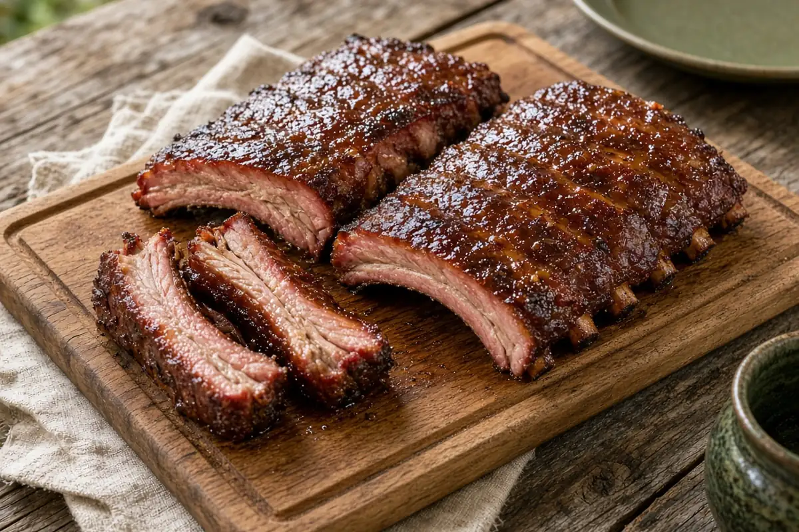

3-2-1 Baby Back Ribs with Brown Sugar and Honey Wrap
Baby backs smoked low at 180°F, wrapped in foil with brown sugar, honey, and apple juice until tender, then sauced on the grates until the glaze sets.

Adapted from traeger.com
6 servings
By
Yield: 6 servings
Prep:
Cook:
Total:
Difficulty: Medium
Ingredients
- 2 racks baby back pork ribs
- 1/3 cup yellow mustard
- 1/2 cup apple juice, divided
- 1 Tbsp Worcestershire sauce
- Pork and poultry rub, to taste
- 1/2 cup dark brown sugar
- 1/3 cup honey, warmed
- 1 cup bbq sauce
Instructions
- Work the tip of a butter knife under the thin membrane on the bone side over a middle bone, grip it with a paper towel, and tear it off.
- In a small bowl, stir together the yellow mustard, 1/4 cup of the apple juice, and the Worcestershire sauce. Spread a thin coat on both sides of the ribs and season well with the rub.
- Set the pellet grill to 180°F and preheat with the lid closed for 15 minutes.
- Smoke the ribs meat side up for 3 hours, until they reach about 160°F inside.
- Move the ribs to a rimmed sheet pan and raise the grill to 225°F. Set each rack on a double layer of heavy-duty foil and turn up the edges. Sprinkle each rack with half the brown sugar, then top with half the honey and half the remaining apple juice. Cover with more foil and crimp the edges tight.
- Return the wrapped ribs to the grill and cook for 2 hours, until about 203°F inside and very tender.
- Unwrap the ribs, discard the foil, and brush both sides with the bbq sauce. Lay them straight on the grate and cook 30 minutes more, until the sauce tightens.
- Rest the ribs 5 minutes, then slice between the bones and serve.
Notes: If the sauce still looks wet after the last stage, give it another 15 to 30 minutes. Add a splash more apple juice to the wrap for fall-off-the-bone ribs. See also the 3-2-1 Smoked Ribs with Apple Spritz.